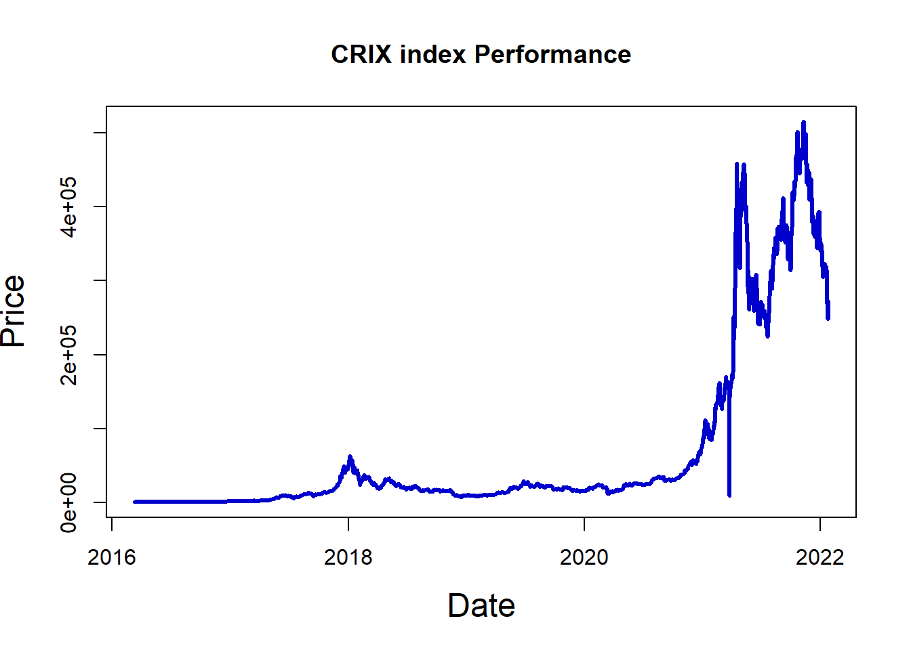
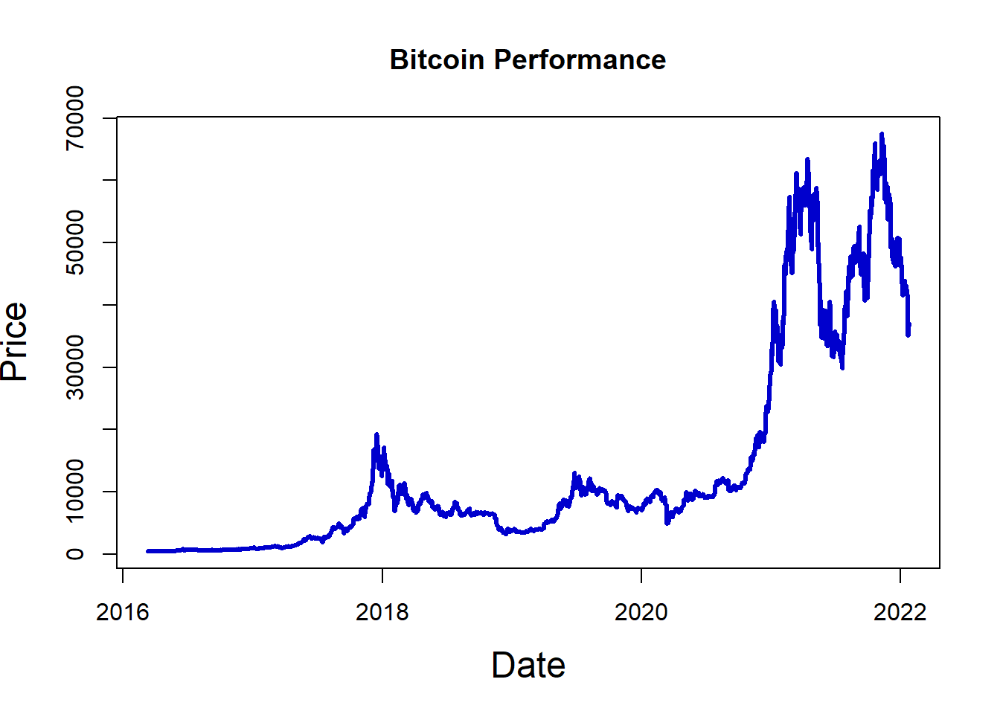
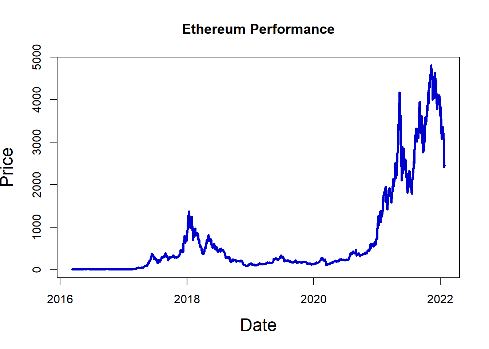
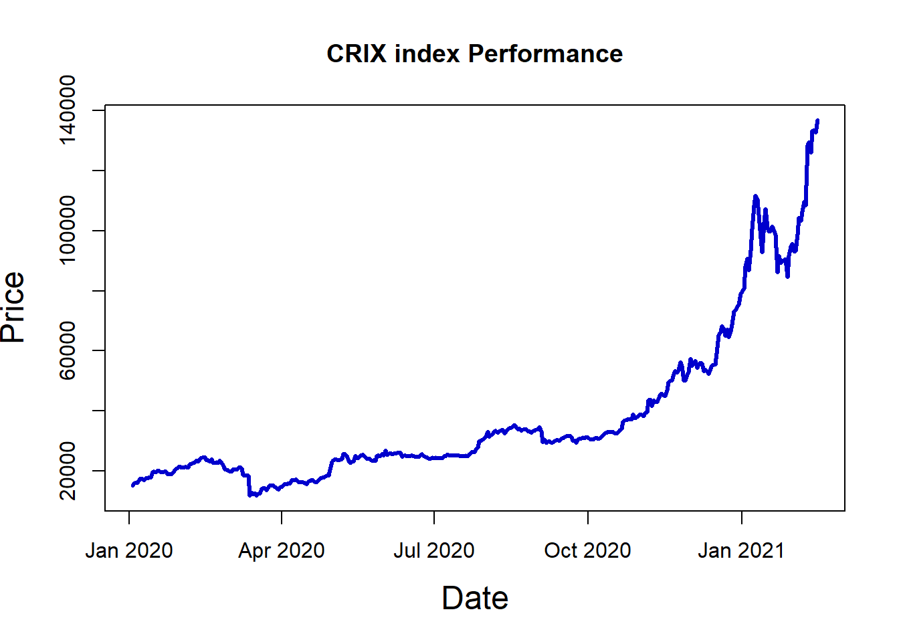
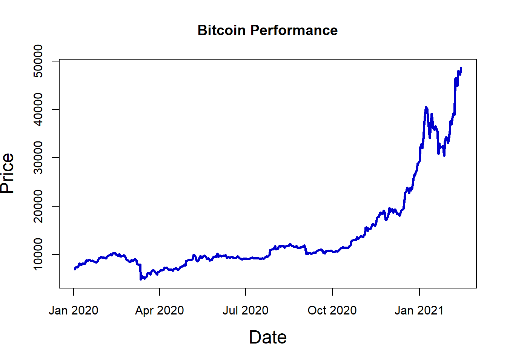
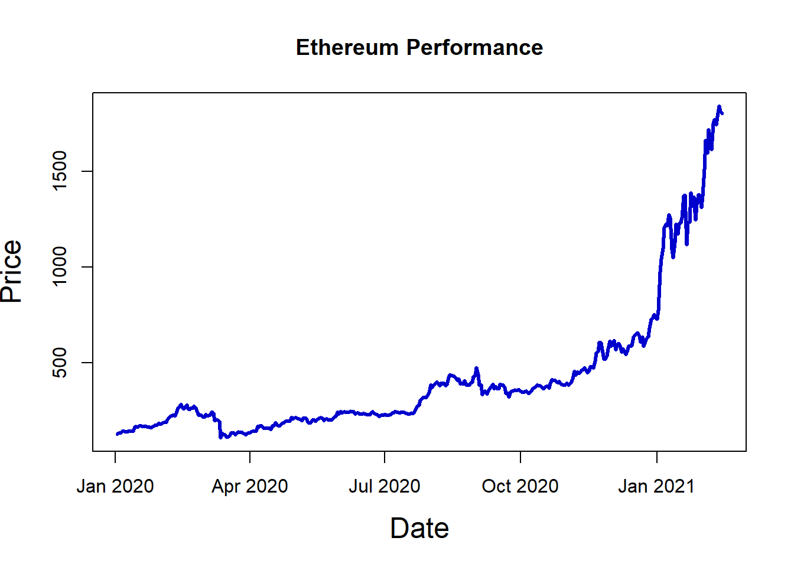

Code
library("jsonlite")
library("tidyverse")
library(readr)
library(knitr)Analiza comparativa a indicelui CRIX cu Bitcoin și Ethereum într-un segment de timp
Vedem cum în lumea de azi digitalul este din ce în ce mai prezent în viețile noastre, în special în „buzunarele” noastre - următoarea generație, copiii pe care unii dintre noi îi vom avea, s-ar putea să fie primii care nu vor folosi deloc bani fizici în decursul vieții lor. Câteva generații mai târziu, aceștia se vor uita în urmă la vremurile apuse când plăteai cu „hârtie, plastic sau metal”.
Astăzi este ușor de înțeles ascensiunea rapidă a valutelor digitale, numite criptomonede. Totuși, pe cât de rapidă este această ascensiune, pe atât de volatilă și nepredictibilă este evoluția lor. Numărul criptomonedelor crește, atât ca tranzacții dar și ca criptomonede în sine (constant apar noi tipuri de astfel de valute digitale - vezi Dogecoin, NFT-uri), iar în acest context putem vorbi despre o piață a acestor monede în care există jucători mai mari și mai mici, jucători care influențează și dau direcție cursului de evoluție și jucători mai mici cu randamente spectaculoase dar cu puțin impact în jurul lor. Cum această piață are impact global (de exemplu El Salvador a adoptat Bitcoin ca mijloc legal de plată pe teritoriul său), este important să existe un indice de piață care să incapsuleze în modelul său comportamentul pieței criptomonedelor ca un întreg.
Acest indice se numește CRIX (CRyptocurrency IndeX) și a fost gândit de o echipă de cercetători de la universitatea Humboldt, Berlin condusă de Wolfgang Karl Härdle. El permite urmărirea evoluției unei piețe cripto diverse și în schimbare rapidă, folosind un număr mic de constituenți.
Luând în considerare că două din cele mai cunoscute și tranzacționate valute pe piața cripto sunt Bitcoin și Ethereum (și cele mai vechi), ne putem întrebarile:
Cât de mult se aseamănă evoluția acestor monede cu performanța pe care o indică indicele CRIX ?
Care este corelarea dintre indicele CRIX și Bitcoin, respectiv Ethereum?
Care este formula matematică prin care indicele CRIX este calculat?
I. Pentru a răspunde primelor 2 întrebări:
vom lua date istorice zilnice ale indicelui și ale celor 2 valute și vom prezenta evoluția de ansamblu acestora între anii 2014-2022
vom prezenta evoluția acestora în perioada pandemiei (o perioadă în care digitalizarea a crescut forțat fapt ce a dus la creșterea pieței cripto). Am ales o perioadă de 410 zile calendaristice, începând din 2 ianuarie 2020 până pe 15 februarie 2021. Data de început corespunde cu începutul pandemiei și începerea restricțiilor iar finalul corespunde cu 2 luni după ce a început distribuirea vaccinului anti-Covid.
vom calcula randamentul zilnic și anual, volatilitatea zilnică și anuală și corelarea dintre ele
II. Pentru ultima întrebare vom consulta articolul scris de Simon Trimborn și Wolfgang Karl Härdle „CRIX an Index for blockchain based Currencies” și vom prezenta succint unele aspecte importante din construcția indicelui CRIX.
Încărcarea librăriilor.
library("jsonlite")
library("tidyverse")
library(readr)
library(knitr)Datele CRIX le-am luat de pe thecrix.de iar datele Bitcoin și Ethereum le-am luat de pe investing.com.
json_file <- "http://data.thecrix.de/data/crix.json"
data_crix <- fromJSON(json_file)
data_btc <- read.csv("H:\\My Drive\\Matematica\\Proiect Analiza Financiara\\Bitcoin Historical Data (1).csv")
data_btc <- data_btc[-c(3:7)]
data_eth <- read.csv("H:\\My Drive\\Matematica\\Proiect Analiza Financiara\\Ethereum Historical Data.csv")
data_eth <- data_eth[-c(3:7)]Am format seturile de date astfel încât să le pot manipula cu funcțiile din R.
Observație: Am vrut ca ziua înregistrării să fie de tip „dată” iar prețul să fie de tip „double”
data_btc$Date <- as.Date(data_btc$Date, '%m/%d/%Y')
data_eth$Date <- as.Date(data_eth$Date, '%m/%d/%Y')
data_crix$date <- as.Date(data_crix$date, '%Y-%m-%d')
data_crix$price <- as.double(data_crix$price)
data_btc$Price <- parse_number(data_btc$Price)
data_eth$Price <- parse_number(data_eth$Price)Evoluția de ansamblu a celor 3 între anii 2014-2022
plot(data_crix, type = "l", col = "blue3", lwd = 3, xlab = "Date", ylab = "Price", cex.lab = 1.5)
title(main="CRIX index Performance")
plot(data_btc, type = "l", col = "blue3", lwd = 3, xlab = "Date", ylab = "Price", cex.lab = 1.5)
title(main="Bitcoin Performance")
plot(data_eth, type = "l", col = "blue3", lwd = 3, xlab = "Date", ylab = "Price", cex.lab = 1.5)
title(main="Ethereum Performance")
Filtrarea seturilor de date pentru intervalul 2 ianuarie 2020 - 15 februarie 2021.
data_c <- data_crix %>%
filter(date > "2020-01-02", date < "2021-02-16")
data_b <- data_btc %>%
filter(Date > "2020-01-01", Date < "2021-02-15")
data_e <- data_eth %>%
filter(Date > "2020-01-01", Date < "2021-02-15")
x <- as.data.frame(t(data_b))
x <- as.data.frame(t(rev(x)))
data_b <- x
data_b$Price <- parse_number(data_b$Price)
data_b$Date <- as.Date(data_b$Date)
y <- as.data.frame(t(data_e))
y <- as.data.frame(t(rev(y)))
data_e <- y
data_e$Price <- parse_number(data_e$Price)
data_e$Date <- as.Date(data_e$Date)Plotarea evoluției în intervalul specific.
plot(data_c, type = "l", col = "blue3", lwd = 3, xlab = "Date", ylab = "Price", cex.lab = 1.5)
title(main="CRIX index Performance")
plot(data_b, type = "l", col = "blue3", lwd = 3, xlab = "Date", ylab = "Price", cex.lab = 1.5)
title(main="Bitcoin Performance")
plot(data_e, type = "l", col = "blue3", lwd = 3, xlab = "Date", ylab = "Price", cex.lab = 1.5)
title(main="Ethereum Performance")
Calcularea randamentului zilnic pentru cele 3 seturi de date.
b_returns <- c(1, diff(data_b$Price)/data_b$Price[-length(data_b$Price)] *100)
c_returns <- c(1, diff(data_c$price)/data_c$price[-length(data_c$price)] *100)
e_returns <- c(1, diff(data_e$Price)/data_e$Price[-length(data_e$Price)] *100)
data_b["Returns %"] <- b_returns
data_c["Returns %"] <- c_returns
data_e["Returns %"] <- e_returnsCalcularea randamentului mediu, randamentului total, volatilității zilnice și a volatilității pe intervalul ales.
stock <- c('CRIX','Bitcoin', 'Ethereum')
Randament_mediu <- c(mean(c_returns), mean(b_returns), mean(e_returns))
Randament_total <- c(sum(c_returns), sum(b_returns), sum(e_returns))
Volatilitate_medie <- c(sd(data_c$`Returns %`), sd(data_b$`Returns %`), sd(data_e$`Returns %`))
Volatilitate_totala <- c(sd(data_c$`Returns %`)*sqrt(410), sd(data_b$`Returns %`)*sqrt(410), sd(data_e$`Returns %`)*sqrt(410))
df <- data.frame(stock, Randament_mediu, Randament_total, Volatilitate_medie, Volatilitate_totala)
kable(df)| stock | Randament_mediu | Randament_total | Volatilitate_medie | Volatilitate_totala |
|---|---|---|---|---|
| CRIX | 0.6239915 | 255.8365 | 3.986145 | 80.71328 |
| Bitcoin | 0.5688461 | 233.2269 | 4.142477 | 83.87877 |
| Ethereum | 0.8085296 | 331.4972 | 5.458710 | 110.53044 |
Datele pe care le-am obținut se potrivesc cu cele obținute de o analiză a site-ului statista.com cu privire la variația volatilității a criptovalutelor

Calcularea corelării CRIX-Bitcoin și CRIX-Ethereum
sprintf("Corelarea dintre CRIX si Bitcoin este %f",cor(data_c$`Returns %`, data_b$`Returns %`))[1] "Corelarea dintre CRIX si Bitcoin este 0.965556"sprintf("Corelarea dintre CRIX si Ethereum este %f",cor(data_c$`Returns %`, data_e$`Returns %`))[1] "Corelarea dintre CRIX si Ethereum este 0.801352"Rezultatele confirmă intuiția pe care o aveam, anume că indicele CRIX este puternic influențat de cele mai puternice valute digitale de pe piață, Bitcoin și Ethereum (cu precădere mai puternic legat de Bitcoin). Observăm o corelare foarte puternică între Bitcoin și CRIX pe intervalul considerat - 0.96 și o corelare puternică între Ethereum și CRIX - 0.8
În continuare vom prezenta câteva aspecte din construcția indicelui CRIX. Prezentăm extrasuri din articolul „CRIX an Index for blockchain based Currencies” de Simon Trimborn și Wolfgang Karl Härdle.
În contextul proiectului nostru, Piața Totală (TM) reprezintă agregarea valorilor tuturor criptomonedelor din universul nostru de interes. Aceasta este calculată ca valoarea combinată a pieței fiecărei criptomonede într-un anumit moment de timp, ponderată în funcție de divizorul specific al pieței respective.
\[ \text{TM}(K)_t = \frac{\sum_{i=1}^{K} P_{it} Q_{i,t_{l}^{-}}}{\text{Divizor}(K)_{t_{l}^{-}}} \]
Rendimentele logaritmice sunt o măsură esențială pentru analiza performanței pieței. Ele sunt definite ca logaritmii diferențiali ai valorilor pieței între două momente de timp consecutive, atât pentru Piața Totală (TM), cât și pentru Indicele CRIX.
\[ \begin{align*}\varepsilon(K)_t^{\text{TM}} &= \log\{\text{TM}(K)_t\} - \log\{\text{TM}(K)_{t-1}\} \\\varepsilon(k, \beta)_t^{\text{CRIX}} &= \log\{\text{CRIX}(k, \beta)_t\} - \log\{\text{CRIX}(k, \beta)_{t-1}\}\end{align*} \]
Scopul nostru principal este de a optimiza construcția Indicelui CRIX astfel încât să minimizăm eroarea dintre rendimentele logaritmice ale TM și CRIX. Acest obiectiv ne va ajuta să obținem un indice CRIX mai precis și mai eficient.
\[ \min_{k, \beta} \|\varepsilon(K)^{\text{TM}} - \varepsilon(k, \beta)^{\text{CRIX}}\|^2 \]
Pentru a efectua analize statistice și pentru a selecta modele adecvate, este necesar să estimăm densitatea distribuției rendimentelor logaritmice. Folosind o metodă nonparametrică cu nucleu Epanechnikov, putem estima densitatea și să ne asigurăm că modelele noastre sunt bine fundamentate statistic.
\[ \text{Nucleul Epanechnikov}: \widehat{f}_{h}(x)=\frac{1}{nh} \sum_{i=1}^{n} \text{Epa}\left(\frac{x-x_{i}}{h}\right) \]
Nucleul Epanechnikov este un tip de funcție de densitate.
Funcția nucleului Epanechnikov este definită astfel:
\[ Epa(u) = \frac{3}{4} \left(1 - u^2\right) \mathbf{I}(|u| \leq 1) \]
Alegerea acestuia este importantă în obținerea unei estimări precise a densității.
Pentru a obține o referință adecvată pentru evaluarea Indicelui CRIX, construim și utilizăm Indicele Pieței Totale (TMI). Acest indice reflectă performanța totală a pieței cripto și este calculat în mod similar cu TM, dar folosește doar criptomonede pentru care sunt disponibile prețurile.
\[ \text{TMI}_t(k_{\max}) = \frac{\sum_{i=1}^{k_{\max}} P_{it} Q_{i,t_{l}^{-}}}{\text{Divizor}(k_{\max})_{t_{l}^{-}}} \]
,unde:
\(\text{TMI}_t(k_{\text{max}})\) reprezintă valoarea Indicelui Pieței Totale la momentul \(t\) , cu un număr maxim de constituente \(k_{\text{max}}\).
\(P_{it}\) reprezintă prețul criptomonedei \(i\) la momentul \(t\).
\(Q_{i,t_{l}^{-}}\) reprezintă capitalizarea de piață a criptomonedei \(i\) la momentul \(t\) sau o măsură a valorii totale a criptomonedei pe piață.
\(\text{Divizor}(k_{\text{max}})_{t_{l}^{-}}\) reprezintă un divizor specific pentru indicele TMI la momentul \(t\) care poate fi utilizat pentru a ajusta valoarea totală a indicelui.
În procesul de optimizare a construcției Indicelui CRIX, trebuie să luăm în considerare o serie de constrângeri, inclusiv numărul optim de constituente (k) și parametri \((\beta)\). Aceste constrângeri asigură că indicele rezultat este robust și relevant pentru piața cripto.
\[ \min_{k, \beta} \|\varepsilon(k_{\max})^{\text{TM}} - \varepsilon(k, \beta)^{\text{CRIX}}\|^2 \text{ s.t.: } \begin{cases} 1 \leq k \leq k^{u} \\k^{u} \in [1, k_{\max}] \\s \in [1, k_{\max}-k] \\\beta^{1 \times(k+s)} = (1, ..., 1, \beta_{k+1}, ..., \beta_{k+s})^{\top} \\\beta_{k+1}, ..., \beta_{k+s} \in (-\infty, \infty)\end{cases} \]
Pentru a alege modelul optim, trebuie să evaluăm o serie de criterii de optimizare, inclusiv validarea încrucișată, criteriul Mallows’ Cp și altele. Alegerea criteriilor adecvate este esențială pentru obținerea unui indice CRIX optim.
CV este un criteriu larg utilizat, care evaluează performanța modelului prin compararea valorilor prezise cu cele observate într-un set de date de validare.
\[ \text{CV}(k, \beta) = \frac{1}{T} \sum_{i=1}^{T} \left\{ \varepsilon\left(k_{\max}\right)_{t}^{TM} - \varepsilon(k, \beta)_{-t}^{CRIX} \right\}^{2} \]
Cp este un criteriu care penalizează modelele care au prea mulți termeni, contribuind astfel la selecția unui model mai simplu și mai generalizabil.
\[ \text{Cp}(\widehat{\varepsilon}(k, \beta), s) = \frac{\sum_{t=1}^{T} \widehat{\varepsilon}(k, \beta)_{t}^{2}}{\widehat{\sigma}(k, \beta)^{2}} - T + 2 \cdot s \]
GCV este o variantă a validării încrucișate care ajustează penalizarea pentru numărul de termeni, oferind o evaluare mai robustă a performanței modelului.
\[ \text{GCV}\{\widehat{\varepsilon}(k, \beta), s\} = \frac{T^{-1} \sum_{t=1}^{T} \widehat{\varepsilon}(k, \beta)_{t}^{2}}{\left(1-T^{-1} s\right)^{2}} \]
Studierea întregii piețe de criptomonede necesită un instrument care să surprindă și să afișeze în mod adecvat mișcările pieței, un indice cripto.
Într-o piață nouă și foarte volatilă este util să existe un indice care cuantifică performanța ei. Astfel investitorii pot avea o măsură după care să se ghideze atunci când vor să investească. Faptul că acest index există denotă maturitatea la care a ajuns piața cripto în prezent.
Prin analiza noastră am demonstrat influența puternică pe care Bitcoin și Ethereum le au asupra acestui indice de piață, prin analiza unui segment de timp relevant cu un randament și volatilitate foarte mare.
(1) https://d-nb.info/1189829010/34
(3) https://www.investing.com/crypto/ethereum/historical-data
(4) https://www.investing.com/crypto/bitcoin/historical-data
(5) https://www.statista.com/chart/27577/cryptocurrency-volatility-dmo/